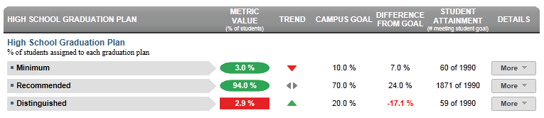

Dashboard Metrics


High School Graduation Plan
Background
Campus Dashboard Metrics
In order to monitor student progress toward completing more rigorous graduation requirements, many school districts across the nation, including New York and several districts in Texas, have incorporated into their internal performance management dashboards metrics on the distribution of students by graduation plan. In addition, during focus groups conducted with educators, the High School Graduation Plan metric, as presented in screen shots of the campus dashboard, was considered useful by 96% of those surveyed.
Although graduation requirements vary by state, the general principles applied in the campus dashboard and data model for graduation plans is applicable to any state or district.
Primary Metric
- High School Graduation Plan: percent of students on each graduation plan (Minimum, Recommended or Distinguished), with comparison to campus goals for each.
Related Metrics
- On Track to Graduate: percent of students in the 10th, 11th and 12th grades who are on track to meet the 4x4 graduation requirements of earning one credit per year in each of the four core subjects, based on courses completed as of the prior year.
- Credit Accumulation: percent of students in the 10th, 11th and 12th grades earning the required number of credits under the Recommended graduation plan (26 total credits before graduation) as of the end of the most recent grading period.
User Interface
Dashboard Example
Figure 1 shows the High School Graduation Plan metric as seen on the campus dashboard.

Figure 1 Ed-Fi High School Graduation Plan Metric
Status Definition
The Status column indicates the percentage of current students across grades 9-12 targeting the three types of graduation plan options specified by the State, as follows:
- Minimum graduation plan
- Recommended graduation plan
- Distinguished achievement graduation plan
The Status indicator is determined by campus-specific thresholds (campus goals) which are set at the district level. The default thresholds are
- Minimum Graduation Plan is 10%
- Recommended Graduation Plan is 70%
- Distinguished Achievement Graduation Plan is 20%
Table 2 lists the Status indicators as seen on the campus dashboard.
Metric Indicators | Comparisons | |||
Metric Name | Sub-metric Name | Metric Status Indicator | Trend | Campus Goal (Delta) |
High School Graduation Plan | Minimum | Red (Percentage) = if the percentage of students is less than campus goal Green (Percentage) = if the percentage of students is greater than or equal to campus goal | Current year to prior year | Campus goal and the calculated percentage of students |
Recommended | Red (Percentage) if the percentage of students is less than campus goal Green (Percentage) if the percentage of students is greater than or equal to campus goal | Current year to prior year | Campus goal and the calculated percentage of students | |
Distinguished | Red (Percentage) = if the percentage of students is less than campus goal Green (Percentage) = if the percentage of students is greater than or equal to campus goal | Current year to prior year | Campus goal and the calculated percentage of students | |
(a) The Value column displays the number of students assigned a specific graduation plan out of the total number of students on campus.
Trend Definition
Table 3 defines the trend indicators for the Minimum High School Graduation Plan metric.
Trend Indicators: Objective is to indicate Minimum Graduation Plan | |||
| Up green | If the value for the current time frame is more than 5 percentage points higher than the prior time frame, then display a gray arrow trending upward. | |
| Unchanged | If the value for the current time frame is less than or equal to 5 percentage points higher or less than or equal to 5 percentage points lower, then display two gray arrows pointing outward indicating no direction. | |
| Down red | If the value for the current time frame is more than 5 percentage points lower than the prior time frame, then display a gray arrow trending downward. | |
The trend does not show for the first occurrence of a time frame since data is not available.
Table 4 defines the trend indicators for the Recommended High School Graduation Plan metric.
Trend Indicators: Objective is to indicate Recommended Graduation Plan | |||
| Up green | If the value for the current time frame is more than 5 percentage points higher than the prior time frame, then display a gray arrow trending upward. | |
| Unchanged | If the value for the current time frame is less than or equal to 5 percentage points higher or less than or equal to 5 percentage points lower, then display two gray arrows pointing outward indicating no direction. | |
| Down red | If the value for the current time frame is more than 5 percentage points lower than the prior time frame, then display a gray arrow trending downward. | |
The trend does not show for the first occurrence of a time frame since data is not available.
Table 5 defines the trend indicators for the Distinguished High School Graduation Plan metric.
Trend Indicators: Objective is to indicate Distinguished Graduation Plan | |||
| Up green | If the value for the current time frame is more than 5 percentage points higher than the prior time frame, then display a gray arrow trending upward. | |
| Unchanged | If the value for the current time frame is less than or equal to 5 percentage points higher or less than or equal to 5 percentage points lower, then display two gray arrows pointing outward indicating no direction. | |
| Down red | If the value for the current time frame is more than 5 percentage points lower than the prior time frame, then display a gray arrow trending downward. | |
The trend does not show for the first occurrence of a time frame since data is not available.
Delta Definition
The Delta column is the absolute value of the difference between the metric percentage (Status column) and the campus goal percentage (Campus Goal column).
Delta Indicators: Objective is to indicate All Discipline Incidents Rate | |||
Metric Name | Sub-Metric Name | Campus Goal | Delta Gradua |
High School Graduation Plan | Minimum | Set campus goal | Red (Delta Percentage) = if the plan percentage i s less than the campus goal Black (Delta Percentage) = if the plan percentage is equal to or greater than the campus goal |
Recommended | Set campus goal | Red (Delta Percentage) = if the plan percentage is less than the campus goal Black (Delta Percentage) = if the plan percentage is equal to or greater than the campus goal | |
Distinguished | Set campus goal | Red (Delta Percentage) = if the plan percentage is less than the campus goal Black (Delta Percentage) = if the plan percentage is equal to or greater than the campus goal | |
Periodicity
At minimum, load this information at the beginning of a school year to assess any interventions required.
Recommended Load Characteristics | |
Calendar | Each semester or at least yearly |
Frequency of data l oad | Twice a year |
Latency | 7-8 months |
Interchange schema | Interchange-StudentEnrollment.xsd |
Tooltips
The standard tool tips for the metric definition, column headers, and help functions display for this metric.
 is ‘No change from the prior period'
is ‘No change from the prior period' is ‘Getting worse from the prior period’
is ‘Getting worse from the prior period’ is 'Getting better from the prior period'
is 'Getting better from the prior period'
Business Rules
The High School Graduation Plan metric indicates the percentage of current students across grades 9-12 targeting the three types of graduation plan options specified by the State, as follows:
- Minimum graduation plan
- Recommended graduation plan
- Distinguished achievement graduation plan
Data Assumptions
- All students are assigned a graduation plan for grades 9-12. If none is assigned, Recommended is the default.
Computed Values
The cohort is the set of currently enrolled students across all grades at the campus. If a student is not assigned a graduation plan, Recommended is the default.
Table 8 defines how values in the Status column are calculated. The result of the calculation displays in the Status column on the campus dashboard.
| Metric | Calculation |
High School Graduation Plan | Total number of all current students with a specific plan * 100 / Total of all current students on campus |
Implementation Considerations
Student Identity
Maintaining a correct and consistent student identity is at the center of any education data system. Most systems use some sort of unique identifier. However, sometimes this identifier is entered incorrectly or sometimes different systems use different identifiers.
The UDM XML supports the interchange of multiple types of identifiers. The StudentReference is a complex type within the UDM to maintain the referential integrity of the student (that is, ensuring that the data associated with each student is accurately associated with the right student). The complex type of the student reference assists with implementing the accurate matching algorithm to identify a student by utilizing any of the individual attributes (e.g., Student Unique State ID, Student ID, Campus Local ID (with Campus ID), Name and Birth Date). For example, if the Student Unique State ID is unknown, you can find the student’s identity by their Student ID, First Name, Last Name and Birth Date.
Default Graduation Plan
The Ed-Fi dashboards assume a default graduation plan of Recommended. Alternatively, developers may list the percentage of students who do not have a graduation plan assigned as a separate data point.
Graduation Plan Periodicity
Some districts automatically assign a default graduation plan to all students upon entry into high school. Counselors and other administrators update plan information as they work with students to define college and career goals, thus this metric changes more frequently during a school year – particularly in the later grades preceding graduation. In these and similar situations, loading this data more frequently is recommended.
Campus Goals
Best practice is for developers to set goals for each campus at the district level. A secure mechanism is required to allow the district to set and maintain those goals.
Aggregate Metric Inclusions and Exclusions of Special Education Students
Each campus's aggregate metrics may include or exclude the special education population, depending on the intended purpose for a specific metric and campus goal.
Drill Downs
Drill Down Views
The dashboards include the option to see more detail that is associated with a metric. Table 9 lists drill down views that are recommended for this metric.
| Advanced Analysis | Break down of student test assessment (commended, not commended, met standard, and didn't meet standard) (future implementation) | |
| Grade Level | Graph of test assessment detail by grade level | |
| Historical | Graph metric values across semesters and years. | |
| Student List | List students who do not meet the threshold for this metric for the specified period. |
Business Rules
The Historical Graph allows the user to see historical data across multiple timeframes. As time passes, there are many bars to be displayed; therefore, the slider on the bottom allows the user to adjust the number of bars displayed as well as the time period shown. The timeframes for this metric were chosen based on educator feedback.